Programming the MC6
Edit Menu
On a new controller, all switches are initially labelled as EMPTY. It is up to you to decide exactly what each one will do.
To enter the Edit Menu
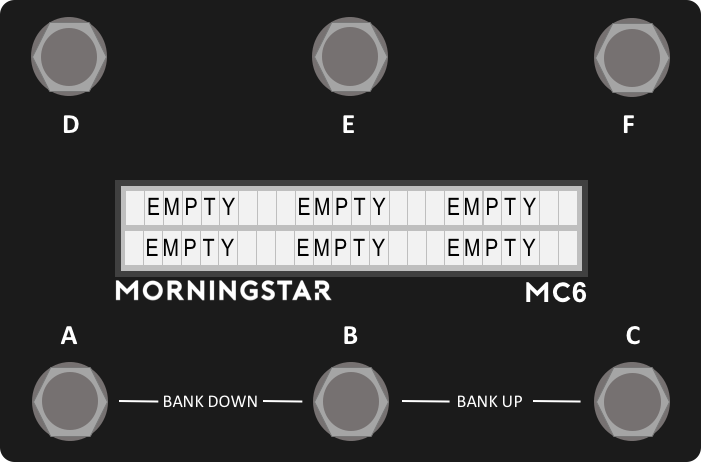
- Press the switch you wish to program
- Press Switches [D + F] together. This will take you the the Switch Settings Menu shown below.
Edit Menu
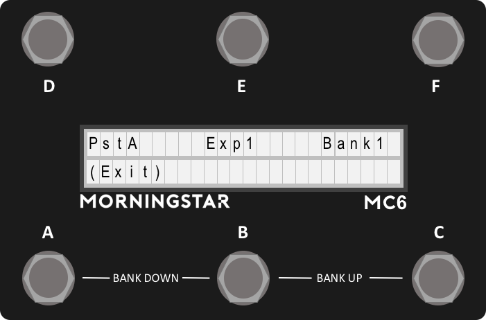
After pressing [D + F], the Edit menu will be displayed. The preset and expression you last used will be displayed, as well as the bank you are currently on. Press Switch D to edit the preset, Switch E to edit the expression preset, or Switch F to edit the bank.
Programming Presets
Upon pressing Preset in the Edit Menu, you will be directed to the Preset Edit page.
Preset Edit Menu (Page 1)
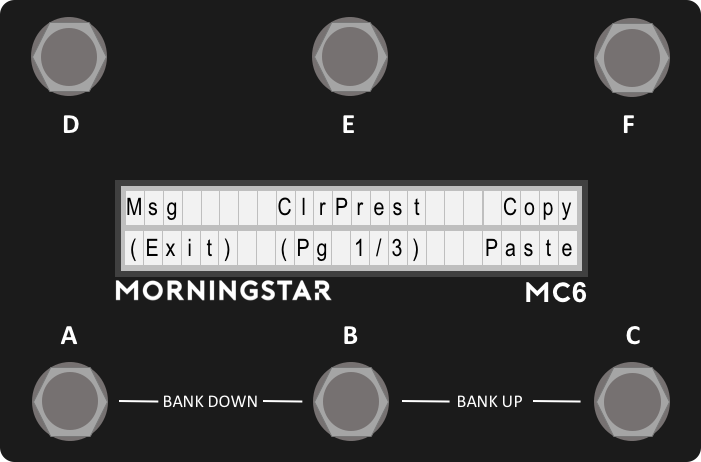
Msg
Edits the 16 Midi Messages available in the preset.
ClrPrest (Clear Preset)
Clear the preset settings.
Copy
Copy the preset settings
Paste
Paste the last copied preset settings
(Pg 1/3)
Shows the current page in the menu. Press to go the next page.
Preset Edit Menu (Page 2)
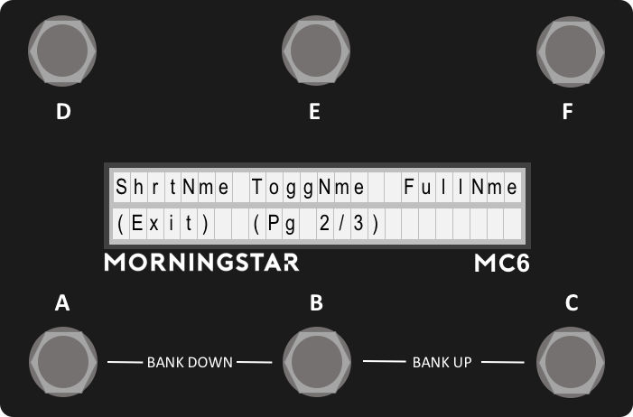
ShrtNme (Short Name)
Edits the preset short name. Look at Editing Names for more information on how to edit any names in the MC6.
ToggNme (Toggle Name)
Edits the preset toggle name. Look at Editing Names for more information on how to edit any names in the MC6.
FullNme (Full Name)
Edits the preset full name. Look at Editing Names for more information on how to edit any names in the MC6.
Pg 2/3)
Shows the current page in the menu. Press to go to the next page.
Preset Edit Menu (Page 3)
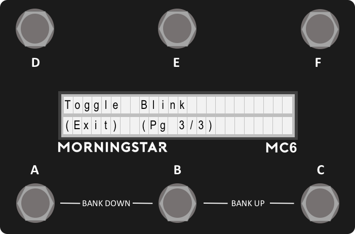
Toggle
Toggles between On and Off for the preset toggle setting. If On, each time the preset is engaged, the toggle position of the preset will change. The Midi Messages in the preset will rely on the toggle position of the preset to determine if it should be invoked.
Blink
Toggles between On and Off for the preset blink setting. If On, the preset short name will blink when the preset toggle is in the engaged position. This is useful to visually determine the toggle state of your preset.
(Pg 3/3)
Shows the current page in the menu. Press to go to the next page.
Editing Preset Messages
The MC6 has 16 Messages in each Preset.
Selecting a Message to Edit
When you enter the Edit Msg interface, the screen above will show. In this screen, you can view the current Midi Type that is assigned to that message. It also indicates the current message that is selected for editing. Pressing Next will allow you to edit the selected message.
Edit Action
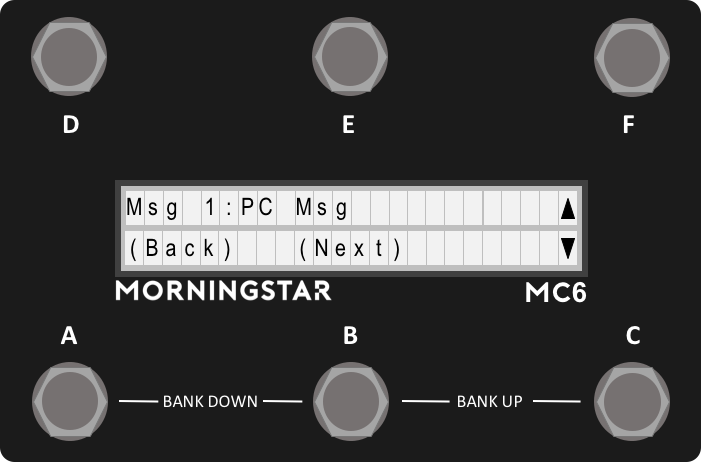
The next menu allows you to select the action to assign to the message. Once selected, each time that action is carried out on the corresponding preset switch, only the messages assigned to that action will be invoked.
Edit Toggle Position
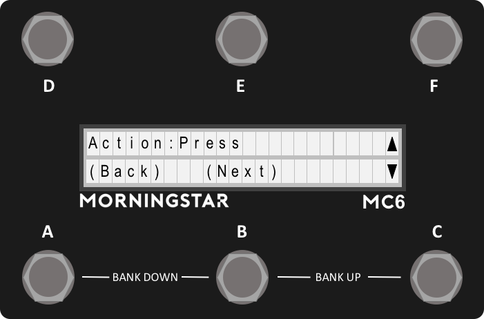
The next menu allows you to edit the message toggle position. Select between On and Off. This allows only the messages that match the current preset toggle position to be invoked.
From firmware 3.2.1 onwards, this feature has changed to toggle positions 1, 2 and Both. Toggle position Both will have the message sent in both toggle positions.
Edit Type
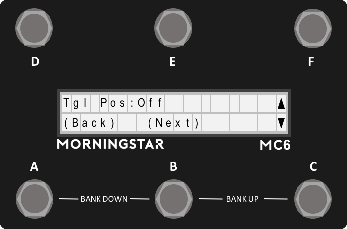
The next menu allows you to edit the Message Type. Scroll up and down to select the Midi Type that you want to be associated with the message. You can read about the full list of Midi Types available in the Glossary.
Edit Type Parameters
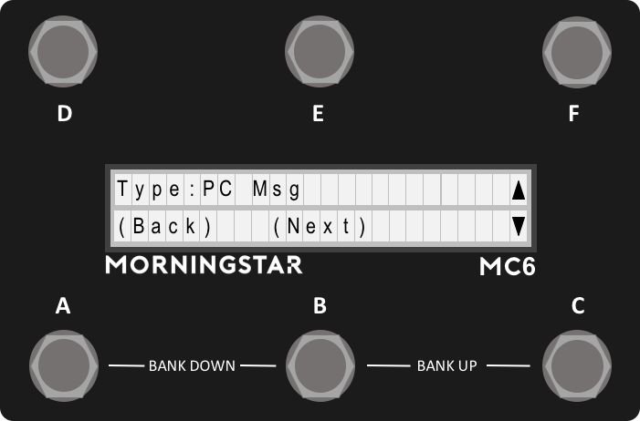
Depending the Midi Type that is selected in the previous menu, unique parameter edit menus will be loaded. Edit your parameters and then press Save on the last page to save your settings.
Setting up a Toggle Message
How to toggle between two different messages on your MC6 MKII.
Using the Web/Desktop Editor
Setting up a toggle message is easy. On the editor, there is a toggle option on the top left of the interface. Switch it to On to enable toggling for the preset.
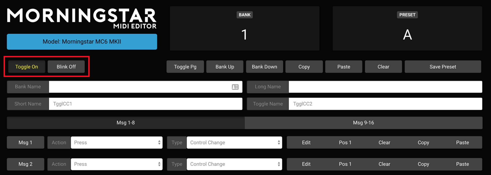
How it works
Each preset on the MC6 allows you to toggle between two positions: 1 and 2. By default, the presets are on toggle position 1. If you switch the toggle to On, each time the preset is engaged, it will toggle to the other position (between 1 and 2).
Each message also has a position option, where it will be sent out only when the position of the message matches that of the preset. Hence, if you set Msg1 to be a CC message in Pos 1, and Msg2 to be a CC Message in Pos 2, and you have your toggle on for the preset, each press will toggle between Msg 1 and Msg 2.
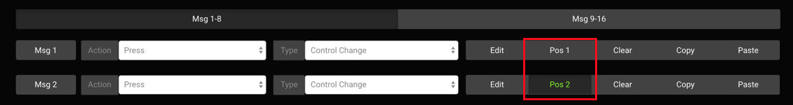
Toggle Name
When the preset is in position 1, the Short Name will be displayed. When the preset is in position 2, the Toggle Name will be displayed.
Blinking
To indicate that the preset is in position 2, you can also use the blink option, where if the blink option is set to On, the Toggle Name on the main page will blink when the preset is in position 2.
Using the built-in MC6 editor
After going into the preset edit menu, go to Page 3 of the menu. The Toggle button toggles between Toggle On and Toggle Off position for the preset, which the Blink button toggles between Blink On and Blink Off position for the preset.
When editing individual messages, there will be an option to select the toggle position for the message you are editing. Choose between position 1 or 2 accordingly.
Editing Expression Messages
To edit expression messages, press switch D + F first, which will bring you to the edit page, and then select the expression option.
Expression Edit Menu (Page 1)
The first page of the menu for editing Expression Messages are the same as that for editing Preset Messages.
Expression Edit Menu (Page 2)
On the second page, you have the option to edit the Full Name, Sensitivity or calibrate your expression pedal.
Edit Full Name
When the expression pedal is being used, you have the option of displaying a Name for your expression preset. Simply edit and save the name to your expression preset. See Editing Names for more information after entering the FullName option in the Expression Edit Menu.
Calibrating your Expression Input
It is best to calibrate your expression pedal before use to get the optimum performance. Simply go into the Calibrate setting in your Expression Edit Menu. Once there, follow the instructions in the LCD. First set your expression pedal to a heel down position. Ideally, the value should be displayed as 0. Press Next. Next, set your expression pedal to a toe down position. Ideally, the value should be displayed as 127. Press Save to save your settings. Do not worry if you can get a value of 0 and 127 in both positions. Once your setting is saved, the MC6 will optimise the settings to get the most out of your expression pedal.
Setting your Expression sensitivity
Depending on the potentiometer value used in your expression pedal, you may have to edit the sensitivity to get optimum performance. We recommend using expression pedals with 10k potentiometers. The sensitivity setting is used mainly to remove jitters, where the value sent by the MC6 might bounce between 2 values very quickly.
Editing Bank Settings
To enter the bank settings, press Switch D + F, which will bring you to the edit page, and then select the Bank option.
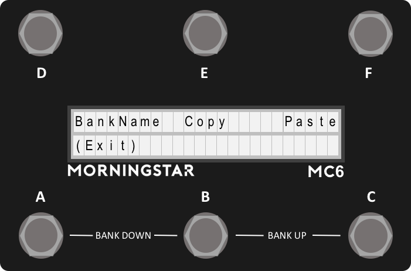
In the edit bank interface, you can edit the Bank Name as well as copy and paste banks.
Bank Name
Edits the Bank Name.
Copy
Copies the current bank.
Paste
Paste the previously copied bank to the current bank.
Editing Names
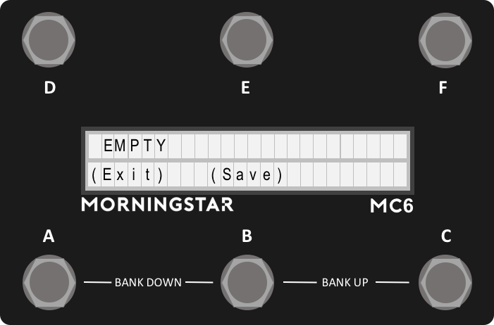
When editing any of the MC6 names like Preset Short Name, Toggle Name, Long Name, or Bank Name, this interface will be display on the screen.
Controls
Moving the cursor To move the cursor left and right, press Switch D or Switch E.
Changing characters
To change the characters, use Switch C and Switch F to scroll up and down the available characters.
(Save)
Saves the name into memory.
(Exit)
Exits the interface.